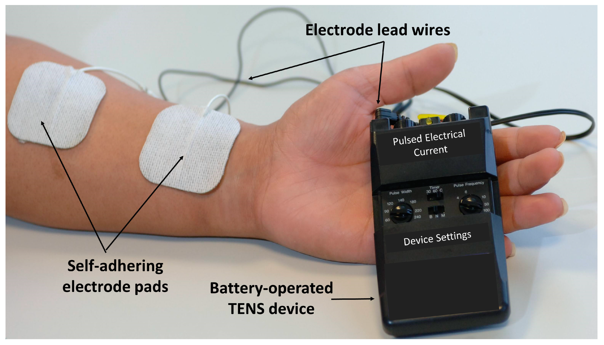

Anatomy

Generator: The generator is the main component of the nerve stimulator and is responsible for generating the electrical impulses. It usually consists of a battery, circuit board, and programming interface.
Leads: The leads are wires that connect the generator to the electrodes. They are typically flexible and insulated to protect the patient's skin and tissues.
Electrodes: The electrodes are small, conductive pads or needles that are placed on or near the target nerve. They deliver the electrical impulses generated by the generator.
Programmer: The programmer is a handheld device used to adjust the settings of the nerve stimulator. It allows clinicians to change the frequency, amplitude, and pulse width of the electrical impulses.
Remote control: Some nerve stimulators come with a remote control that allows patients to adjust the settings of the device themselves.
Sensing circuit: A sensing circuit is an optional component that some nerve stimulators have. It allows the device to detect changes in the patient's body and adjust the electrical impulses accordingly
Working
The nerve stimulator device is typically implanted under the skin, and it is connected to electrodes that are placed on or near the nerve that needs to be stimulated.
The device is programmed to deliver electrical impulses at specific frequencies, intensities, and durations. The electrical impulses then activate the targeted nerve, which can help to alleviate pain, improve muscle function, or control seizures.
The effectiveness of nerve stimulation depends on several factors, including the type of condition being treated, the location of the targeted nerve, and the patient's individual response to the treatment.
Nerve stimulation is generally considered safe, but it can have some risks and side effects, such as infection, pain, and device malfunction.
Overall, nerve stimulation is a valuable treatment option for a range of medical conditions, and it can provide significant relief for patients who have not responded to other treatments.
However, nerve stimulation should only be done by trained medical professionals and after a thorough evaluation of the patient's condition.
 A nerve stimulator is a medical device used to stimulate nerves in the body with electrical impulses.
It is commonly used to diagnose and treat various medical conditions, including chronic pain, muscle weakness, and neurological disorders such as epilepsy and Parkinson's disease.
The nerve stimulator consists of a small device, usually implanted under the skin, that generates electrical impulses.
The device is connected to electrodes that are placed on or near the nerve that needs to be stimulated.
The electrical impulses from the device stimulate the nerve, which can help to alleviate pain, improve muscle function, or control seizures.
A nerve stimulator is a medical device used to stimulate nerves in the body with electrical impulses.
It is commonly used to diagnose and treat various medical conditions, including chronic pain, muscle weakness, and neurological disorders such as epilepsy and Parkinson's disease.
The nerve stimulator consists of a small device, usually implanted under the skin, that generates electrical impulses.
The device is connected to electrodes that are placed on or near the nerve that needs to be stimulated.
The electrical impulses from the device stimulate the nerve, which can help to alleviate pain, improve muscle function, or control seizures.